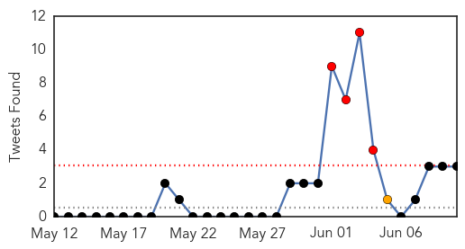

30 Day Trends
Web: 6 alerts, 1 warnings
Twitter: 4 alerts, 1 warnings
Top Articles:
- 1.000
- MERS infections exceed 100 in Korea
- 0.999
- MERS May Be Waning, But Steer Clear of Camels
- 0.999
- Experts puzzled by virus jump from animals to humans in the Middle East
- 0.999
- Park postpones US trip as South Korea MERS toll hits nine
- 0.999
- The World On Arirang
- 0.999
- iafrica.com S. Korea MERS death toll hits nine
- 0.999
- South Korea MERS outbreak: 7 dead; 2,500 quarantined
- 0.999
- 9 dead in South Korea MERS outbreak: President cancels US visit
- 0.999
- The World On Arirang
- 0.998
- Park postpones US trip as South Korea MERS death toll hits nine
- 0.998
- MERS Is No Reason to Close Schools, WHO Tells S. Korea
- 0.998
- South Korea MERS outbreak: Officials brace for 'most important p
- 0.998
- South Korea MERS death toll hits nine
- 0.998
- South Korea MERS outbreak: Officials brace for 'most important period'
- 0.997
- South Korea to check pneumonia patients for MERS virus
- 0.997
- MERS claims 9th victim; 13 more infected
- 0.997
- South Korea reports 13 new MERS cases, two more deaths
- 0.997
- (4th LD) S. Korea reports two more MERS deaths, 13 new cases
- 0.996
- MERS outbreak delays S Korean President Park Geun-hye’s US trip
- 0.996
- S. Korean president delays U.S. visit after MERS infections top 100 in 3 weeks
- 0.996
- WHO asks countries to remain alert on MERS
- 0.995
- Why South Korea's MERS Outbreak Might Not Be as Bad as SARS
- 0.995
- WHO Urges for the Reopening of 2,700 Schools in South Korea
- 0.995
- Woman isolated in Hong Kong hospital over MERS
- 0.994
- Woman isolated in Hong Kong hospital over MERS - Regional
- 0.994
- Woman isolated in Hong Kong hospital over MERS
- 0.994
- MERS will be stopped soon
- 0.993
- Singapore expands Mers checks on air travellers, Others news, Health News, AsiaOne YourHealth
- 0.993
- Woman isolated in Hong Kong hospital over suspected Mers, East Asia News & Top Stories
- 0.993
- Woman isolated in Hong Kong hospital over MERS
- 0.992
- Woman isolated in HK hospital over MERS – BorneoPost Online
- 0.992
- President Park Geun-hye delays Sunday's visit to US
- 0.991
- (MERS virus) South Korea struggles to contain spread, 13 more infected
- 0.990
- WHO urges S.Korea to reopen schools shut over MERS
- 0.989
- S. Korea's Park postpones US trip, MERS deaths increase
- 0.988
- Suspected MERS in HK raises fears of regional spread
- 0.988
- Risk of Mers cases in China has ‘increased significantly’, says government
- 0.988
- Beijing warns of MERS risk
- 0.986
- Police Charge 8 People For Spreading False Rumors About Deadly Disease
- 0.986
- Hong Kong suspects two MERS cases
- 0.986
- S. Korean businesses step up precautionary measures against MERS
- 0.985
- Middle East respiratory syndrome cases broken down by country
- 0.985
- One of four suspected Mers cases picked up at Hong Kong health centres tests negative
- 0.985
- New deaths as S Korea sets up #MERS clinics countrywide
- 0.985
- S. Korean authorities’ instructions on MERS don’t match with actual situation
- 0.983
- Severe tuberculosis case sparks hunt for possible victims
- 0.983
- Nine Dead, 108 Infected As Authorities Struggle to Contain Virus
- 0.980
- Park postpones US trip as MERS death toll hits nine – BorneoPost Online
- 0.980
- 77-year-old overcomes MERS
- 0.979
- S. Korean President Delays U.S. Visit amid MERS Crisis
Showing top 50 articles...
Top Tweets:
- 0.592
- RT: Hufof MERS outbreak by the numbers: 30 cases 13 deaths dating to April 20. 4 HCWs. 17 with confirmed links rest unde…
- 0.572
- Hufof MERS outbreak by the numbers: 30 cases 13 deaths dating to April 20. 4 HCWs. 17 with confirmed links rest under investigation. 2/2
- 0.512
- Recent MERS cases emphasize importance of good infection control in health care system. Read more via: http://t.co/XLsExlpMps
Web/News Articles

Tweets
Article Locations

Article Confidences